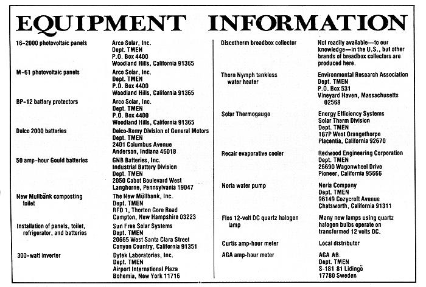

Stand Alone: Striving For Energy Independence
July/August 1983
By Sara Yerkes
This California couple has switched off the power grid . . . without giving up electricity.
I recently finished my first "sun powered" novel . . . one that I wrote on an Apple computer run by photovoltaic electricity. Actually, solar panels are the only source of electric power that my husband Bill and I have had for more than a year. You see, we're in the process of planning and building our own energy self-sufficient (we hope!) house, and we figure that there's no better way to get into the independent spirit of the project than to live without a power utility connection at the building site.
Of course, as many of you have found out, photovoltaic systems are most cost-effective in sparsely developed areas . . . where the only other energy choices are setting up alternative power sources, running a diesel fueled generator, or having no electricity at all. But Bill has been involved in the development and manufacture of solar cells (at Arco Solar, Inc.) for over 15 years, so his pioneering nature led him to try "stand alone" living even though we're only a short distance from the power lines.
We wanted to see if we could achieve an energy-independent life that was not at the same time a Spartan one. And, believe me, the last 12 months or so have been anything but austere! Our trailer has plenty of modern conveniences, including lights, a refrigerator, a color television, a radio, a stereo, and an indoor (electric composting) toilet. Putting all this together, however, did involve a good bit of research and experimentation on our part. We hope that those of you who fancy the idea of either living or vacationing in remote areas whether for extended periods or for only a few days at a time-may benefit from our experience.
SHOPPING
In a way, our residence itself gave us a slight head start, because trailers are engineered with a number of attributes for self reliant living. The 24-foot Layton we'd picked out included a 300-gallon water tank . . . low-voltage lights backed up by a pair of batteries . . . a holding tank for human waste . . . and even a low voltage (or propane) refrigerator. Unfortunately, most of these features were not designed with high efficiency in mind, since trailer owners are expected to pay frequent visits to waste disposal sites and to recharge the batteries on a regular basis while driving. That meant we'd have to seek out some specialized components for our stationary arrangement.
During the year preceding our move to the site, we scoured recreational-vehicle and camping stores in our southern California region, but were able to locate only a few of the extra-efficient components that we needed for photovoltaic living. We did find a Nor cold electronic refrigerator, however, to replace the absorption-cycle Electrolux t hat had come with the trailer. The new 12 volt DC (direct current) icebox consumes only 80 amp-hours per day . . . a tiny fraction of what the heat-driven unit had used.
It was during two trips to Europe that we located most of the equipment for our electricity self-sufficient home. After a stop to review literature at the Swedish Konsument Verket--where all consumer appliances in the country are tested and compared-we purchased a New Mullbank electric dry composting toilet from a local Stockholm department store. (We were surprised to find that there are actually 16 manufacturers of composting toilets in Sweden . . . largely as a result of laws restricting the use of septic systems at vacation cabins.)
While in Italy, we found a compact, low profile solar water heater that fits our trailer far better than did anything we had seen in the U.S. The 35-gallon passive (or "breadbox") Discotherm works from the existing water pressure on our city connection so it requires no extra pumping energy-and has that famous Italian flare for combining style with function. The unit is equipped with acrylic glazing, to which Bill added a layer of treated nickel foil-which allows 97% o the sunlight to pass through, but only 3% of the captured energy to escape-to lessen nighttime heat loss.
We knew that during the rainy winter months we'd need some sort of hot-water backup system to augment that solar collector. So after examining the numerous "tankless" heaters available in Europe, we settled on a propane-fired English Thorn Nymph. Unlike a conventional water heater, our on-demand unit warms liquid only when a hot-water faucet is turned on (rather than keeping a large quantity heated at all times), which provides significant energy savings.
Another acquisition from our European travels was a Flos quartz reading lamp. Though the little light was set up to use Rome's 220-volt AC (alternating current) power, Bill noticed that it actually transformed that high-voltage electricity down to 12 volts to heat the filament. By wiring back from the bulb and around the transformer, then, he was able to provide us with a compact lamp . . . one that throws the bright white light characteristic of quartz bulbs, yet runs on our 12-volt photovoltaic system.
Some of the other components contributing to our home-powered comfort include a Panasonic 12-inch color television ... a Hitachi AM/FM cassette stereo . . . the Apple II Plus computer with two disk drives, a CRT monitor, and a 15-inch Epson printer . . . a Repair swamp cooler . . . and even an Insect Aside bug "zapper". (Also, before we hooked into city water pressure, we used a Noria 12volt DC water pump.)
The electricity to run all these appliances comes from 20 Arco Solar 16-2000 photo voltaic panels and is stored in 10 Delco 2000 batteries hidden beneath our dinette benches. Arco Solar's BP-12 battery protectors monitor the charge from the panels to the storage cells, but Bill also keeps a continuous log of the charge level with a strip chart recorder and makes occasional checks with a voltmeter.
Because there are some appliances that just won't run on the 12-volt DC electricity that the panels supply (through the batteries), we bought a 300-watt Dytek 120-volt AC inverter. It supplies the necessary AC power to the computer, our toilet's fan and stirring mechanism, a coffee grinder, an electric fan, and-once in a while-an ice cream maker! With only 300 watts on tap, we do have to be careful not to use too many appliances simultaneously, but a new system we're examining (which includes more panels and a 48-volt DC to 120-volt AC, 700-watt inverter) should make the installation in our permanent house much more versatile.
AND FOSSIL FUEL?
Unfortunately, although the sun supplies our electricity, we haven't yet figured out how to completely eliminate our need for nonrenewable sources of energy. Much of our cooking is done on the propane stove in the trailer (though we do rely on an outdoor barbecue to a great extent in the summer). Our bottled fuel also provides our space heating in the wintertime and runs the tankless water heater that backs up the solar unit from November through March. Even with those demands, however, we stretch about six weeks from a single six-gallon bottle of propane during the cold months.
By early spring, we can extinguish the pilot light of that on-demand water warmer and rely solely on the sun until the following autumn. And in the summer (when we have no space-heating needs), we can go a full four months between refuelings. To keep us posted-year round-on the amount of hot water available in our breadbox collector, we have a Solar Thermo gauge located in the kitchen. When the device shows ten lights, I know that we have lots of hot water .. . when four are lit up, there's enough for a shower . . . and two lights indicate that I'll have to content myself with just washing my face.
LIFE UNDER THE SUN
After living for a year in our 24-foot trailer, we're more than eager to move into roomier quarters . . . but we're also glad to report that 160 square feet has sufficed for even our intensive demands. Our computer and its accessories have pretty much driven us from the dining area, but in the spring, summer, and fall we can dine on the deck that Bill added last year, enjoying the spectacular scenery from our perch above the San Fernando Valley.
The wooden lattice overhanging the deck provides needed shading for the trailer in the summer. On hot days, we further cool our home by running the electric fan. Then, when the mercury really zooms upward (as it did last August, with temperatures reaching above 105 °F), we turn on our swamp cooler . . . which draws only 5 amps at 12 volts.
We're also blessed with good soil, a rarity in this region of hills and giant rocks. With the double digging techniques MOTHER introduced us to-and a lot of grumbling and groaning as we dislodged (and then heaved over the hill) huge boulders and hunks of broken pavement-we've created an abundant, pest-free garden. Grateful honeybees, butterflies, and toads (as well as a lizard with her offspring) have settled in, thereby increasing our compatibility with the land. (And, of course, raising vegetables as we do is another way of tapping the sun's energy. After all, plants are excellent solar collectors!)
Bill and I are very pleased with our life here . . . one that's rich with nature's power and beauty, complemented by human ingenuity. From our stay in the trailer, we've learned a lot about trying to achieve energy independence, and we hope our completed passively heated and cooled solar home will bring us even closer to that goal. But we're not sitting on our photovoltaic duffs just yet. Bill is currently testing an 11-cubic-foot Sanyo refrigerator and some new Gould sealed-battery units . . . planning a system that will provide all electric cooking . . . and even scheming on how to rig up a solar-powered dish antenna .
 RIGHT: Sara works on her solar novel (solar-powered, that is!). Photovoltaic panels provide the current that runs her Apple computer. LEFT:. Sara and Bill are leading a crowded life in their RV-while they work on finishing their permanent home-but it's a unique one. All their electrical needs are supplied by the sun. (Note as well the breadbox solar water heater on the trailer's roof.) |
 |
|